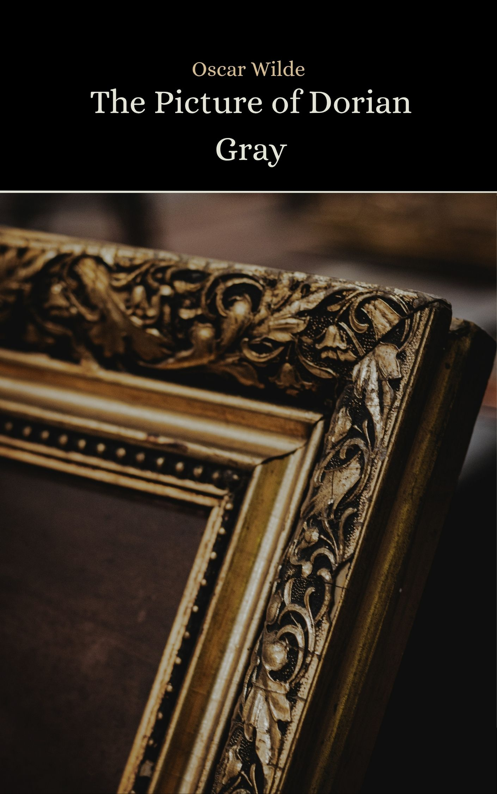

✦ Est. MMXXVI ✦
A sanctuary of shadow & forgotten prose
✦ From the Shelves ✦
Mary Shelley, 1818

Oscar Wilde, 1890
Fyodor Dostoevsky, 1880
Matthew Lewis, 1796
“The books that the world calls immoral are the books that show the world its own shame.”
— Oscar Wilde